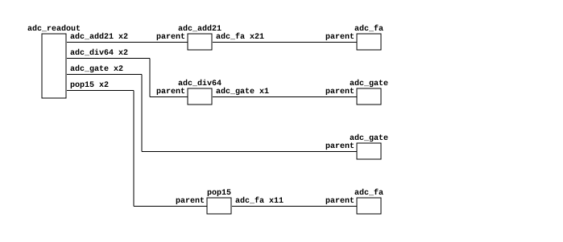

Final mask review
SKY26e differential CCRO ADC · tt_um_eleva_ccro_adc
GDS SHA-256 3d8a8502549ad4229debe27ae7c428059759af6e9657fcf2ff3c616e27a74d25
| Comparison | Result | Log |
|---|---|---|
| Analog macro LVS | 616 devices, 214 nets, 36 pins matched. Zero property errors. | Netgen |
| Full tile LVS | 10,390 devices, 5,137 nets, 53 pins matched. Zero property errors. | Netgen |
| RTL vs. routed gates | 239 state bits paired. All 572 checks proven. | Yosys |
| Metal connectivity | 64/64 connections. Central met4 stripe connects to VGND. | KLayout |
Combined verdict · Input hashes · Netgen deck provenance
Magic recorded 2,160 terminal warnings inside decoupling cells and 54 boundary warnings at diode locations. Warning breakdown and positions
Inspect the design
In Xschem select Xana and press e to descend. Press Ctrl+e to return. In KLayout double-click a marker to locate the conductor.
Nets, layers and coordinates · Probe data · Review guide and proof conditions
Digital hierarchy

Negative controls
Increasing one PMOS width from 8.4 to 12.6 µm produced an LVS property error. Inverting routed SDO left an unproven output. Netgen control · Yosys control